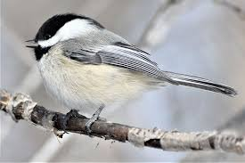

Tell me, is the Earth worse for giving in like that?"
--Rumi
My mom used to keep a bird feeder on her patio deck. The funny wrens and adorable chickadees flocked to the feeder, flittered about, enjoyed a meal, then flew happily off.
One day a large hawk sat intently on the deck bannister waiting for these little visitors, to eat them for its own meal.
“Oh no!” I said. “I’ll go chase him off!” And my mother said, “Leave them be. This is part of it too. Nature is cruel.”
Oh.
But, but… cute! But sweet! But please, not death, not suffering, not terror.
Please?
C’mon, life, give us positivity, smiles, happiness.
Only.
No hawks! Chickadees only!
I mean, what could existence be thinking, coming up with a system like this? How can it be so wrong, so mean, so painful?
Maybe existence needs to take a positive-thinking workshop, a find-your-bliss retreat, an enlightenment program, 'til it sees the error of its ways and gets things rightly happy.
That's what all my friends are doing through this social lockdown- trying to banish anxiety by taking positive-only zoom classes from body workers who are suddenly experts on absolutely everything, or joining life-coach pep rallies- I mean workshops- to get everyone all revved up with we-can-do-it! energy.
Though to be honest, at the same time, most of them are indulging in larger-than usual comfort quantities of food, wine, pot, TV, panic, self-hatred and despair.
Which of course is also unacceptable and also an error of existence.
But in these times of alone-at-home, folks are pretty sure they'd go crazy without all that, so never mind.
We humans reject vast amounts of experience.
Happy and calm- yes. Fear and sadness- No.
That constant rejection of everything painful might possibly create a lot of the emptiness that ends up needing to be filled with all those sugar highs and sedations. As opposed to being the result of it.
Still, we’re pretty clear about what we want. Go team bliss calm contentment!
So it's kind of odd that we haven't have noticed that all that pushed smiley positivity is not at all peaceful.
And it's odd that we also haven't noticed that acknowledging the reality of helplessness, surrendering to the possibility that there’s nothing we can do and that relentless good cheer is not going to save us… actually is peaceful.
Now to be fair, most of us have never even considered surrender to the less-than-happy.
So we couldn't have noticed that it's the opposite of rejecting all negativity, the opposite of trying to force existence to play nice, that can actually bring the calm and better feelings we've been so hungry for, for so long.
Meanwhile, enlightenment fans do the exact same kind of experience-rejection.
Even when it's possible that accepting distress and unhappiness actually might offer a different, more direct way to the transcendence also earnestly desired.
Wouldn't it be something if all those panic attacks and dark nights of the soul actually contained what's been sought, rather than blocking the way.
Because if we're consciousness, experiencing itself, and wanting it all, then that includes every feeling, every thought, every color.
Every experience.
Hawk AND chickadee.
As opposed to little ol' us rejecting inclusive vastness because we think that this limited self, with its insistence on bliss and calm only, is what we are.
'Course this human rejection doesn't hurt vastness one bit.
It does hurt for us, though.
So just for fun, we might try on the possibility of BEING every sensation, being every sound, being every thought, and laughter, and tear.
Being experience itself, rather than the one with all the preferences for nice feelings.
Rather than the one all this happens to, or even the one who notices.
We might begin to notice our usual sense of self, our everyday, I'm-right-here sense, disappear. We might begin to notice the typical demands of the mind go quieter.
Since we are those too.
As the sense of ME dissolves into everything.
And also. And yet. And still, our usual lifelong, self-long preference for happiness over pain continues.
And the enormous experience that we are ...
actually coexists with and includes that self story.
BEING and including all that too.
So we can be clear that this different, bigger BEING experience is not better than any other, either.
No point in substituting one demand on life for another demand on life.
But thinking that what we are is a self rather than existence, hurts.
Seeing we’re not that self, feels better.
Which is what we’ve wanted all along from all that cheery focus on bliss, positivity and happiness.
And paradoxically,
that just might make us
happy little chickadees.
Click here to get your every week.
“We have tried everything to get rid of suffering. Finally, when one has tried enough, there arises the willingness to stop the futile attempt to get rid of it and, instead, to actually experience suffering. In that instant, there is the realization of that which is beyond suffering, of that which is untouched by suffering. There is the realization of who one truly is." --Gangaji
"God is trying to sell you something, but you don’t want to buy.
That is what your suffering is:
Your fantastic haggling, your manic screaming over the price."
--Hafiz
